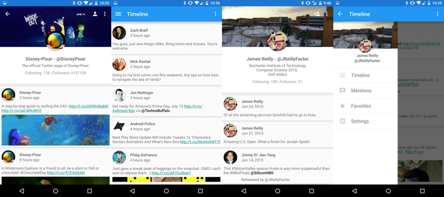

<div id="index-banner" class="parallax-container">
  <div class="section no-pad-bot">
    <div class="container">
      <br><br>
      <h1 class="header center white-text">JTweet</h1>
      <div class="row center">
        <h5 class="header col s12 light white-text">A Material Design Twitter Application for Android</h5>
      </div>
      <div class="row center">
      <a href="https://github.com/James-Reilly/JTweet" id="download-button" class="btn-large waves-effect waves-light light-blue darken-4">Check it out on Github!</a>
    </div>
    </div>
  </div>
  <div class="parallax blend">
    
  </div>
</div>   
